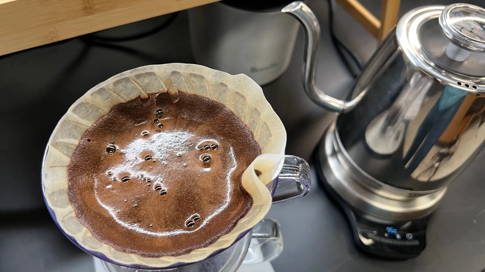
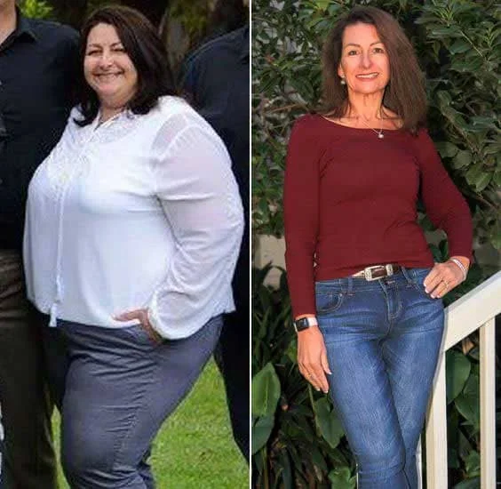
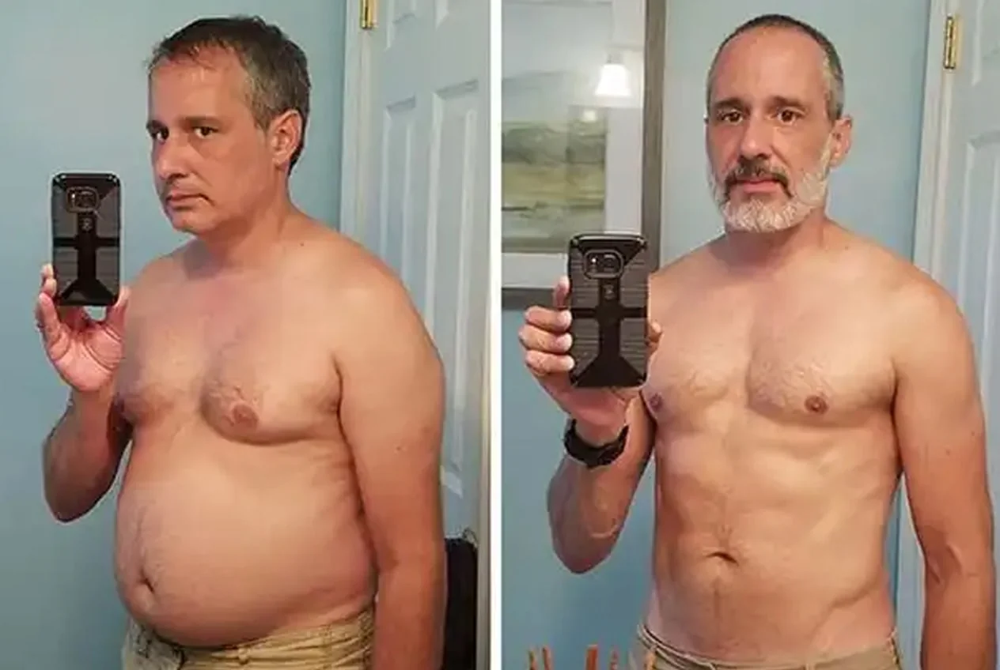
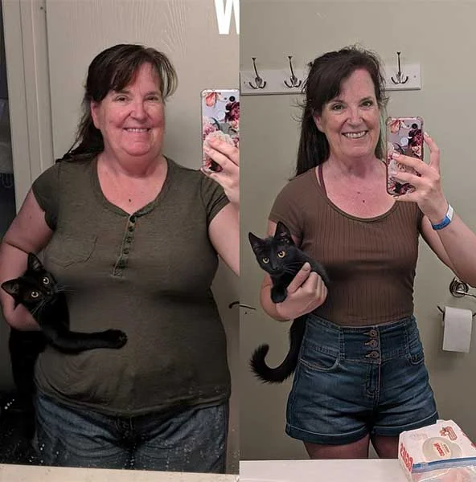

Cardiologist: 'I've watched patients lose stubborn belly fat since they stir this powder into their morning coffee – or their tea'
Most people think of belly fat as a cosmetic problem.
A heart specialist with 22 years of clinical experience sees something quite different in it.
And he explains why tens of thousands of people are now stirring a small sachet of powder into their morning coffee – or their tea – and watching their waistline finally give way.

'Belly fat doesn't just sit there looking bad'
Dr Andrew Bell works with patients at raised cardiovascular risk.
Many are overweight. And almost all have seriously tried to lose weight.
Over the years he noticed a pattern that wouldn't let him go.
'I had patients who did everything right. Counting calories, 10,000 steps a day, giving up their favorite foods. And the scales barely moved – or dropped a little and then stalled. But the visceral belly fat stayed. And with it the cardiac risk.'
— Dr Andrew Bell, CardiologistIt is precisely this deep belly fat around the organs that is the decisive point.
It is not the same as the soft fat just under the skin.
It is biologically active – it releases inflammatory messengers that directly strain the cardiovascular system.
'It was never just about appearance for me. It is precisely this fat that shortens lives. And the standard advice practically never reached it in my patients.'
Why This Fat Ignores Almost Everything You Try
When Bell started digging into the metabolic research, he came across a term that explained everything: insulin sensitivity.
When it declines – and it does, quietly, over years, in millions of adults – the fat cells receive a constant signal.
Store. Keep everything. Release nothing.
And then he says a sentence that leaves many patients silent:
'The problem is not your discipline. The problem is a locked fat cell. You can eat as little as you like – you will not open a locked cell by going hungry.'
— Dr Andrew Bell, CardiologistPicture a storeroom with a jammed lock.
All the energy is inside – years of stored fat, just waiting to be burned.
But the lock is jammed.
You can push against the door – eat less, move more – and nothing opens.
And this, says Bell, is exactly where the reason lies for a phenomenon many know:
People who cut 500 calories a day often feel drained.
Because the body burns muscle first – not fat.
The fat cell stays physiologically locked.
The Four Compounds the Cardiologist Points To
After working through the scientific literature, four natural compounds remained – with solid data on insulin sensitivity, fat metabolism and metabolic rate.
He expected to test each one on patients over months.
Then a colleague pointed him to something: a coffee booster that combines all four in a fine powder – one that simply dissolves into the morning cup, with no taste and no extra pill.
- Chlorogenic acid from green coffee beans. 'The compound that first caught my attention. The data on chlorogenic acid and glucose metabolism is remarkable.'
- Chromium. 'A trace mineral that contributes to normal blood sugar levels – it works at exactly the point where the craving cycle starts.'
- L-Carnitine. 'Once the lock opens, the fatty acids still have to reach the furnace. L-Carnitine helps carry them there.'
- Green tea extract (Camellia sinensis). 'Rich in catechins that support fat burning – they keep the furnace hotter once the fat is finally moving.'
Why the Morning Coffee of All Things?
Coffee is not a neutral carrier for these compounds – it is an active one.
Caffeine naturally raises the metabolic rate and gets fat burning going in the hours after the cup.
'Caffeine opens a metabolic window. In the first hours after the morning cup your body is already primed. Put the right compounds into exactly that window and the effect is amplified. You're not fighting your biology – you're working with it.'
— Dr Andrew Bell, CardiologistIn the cup, the powder dissolves into a drink that already delivers caffeine – and it is the caffeine that opens the window.
The development team calls this the hot-drink window: the drink opens it, the powder sends the four compounds through it.
One cup, two effects: first the cravings go quiet – then the metabolism switches over.
A Booster for the Cup You Already Drink
Not a new coffee. Not a shake. Not a pill.
Just a fine powder in a sachet: the Wellaray® Slim Coffee Booster.

'And before the patients ask – which they always do,' says Bell, 'it dissolves cleanly. It changes neither taste nor color nor aroma. My patients forget it's even in there. And forgetting is good – because consistency is the whole point.'
Check availability »It Says 'Coffee' on the Sachet – So What If You Prefer Tea?
A fair question – and one the manufacturer says has received almost from the first week.
Always some version of the same sentence: 'I don't drink coffee in the morning. I drink tea. Does that work too?'
Bell's answer is unambiguous: yes.
'The name simply tells you what it was developed for. But the four compounds are in the powder – not in the coffee. The coffee is the carrier. What actually opens the metabolic window is caffeine, and a proper cup of black tea delivers caffeine too. Black tea, Earl Grey, breakfast tea – the window opens all the same, just a touch more gently.'
— Dr Andrew Bell, CardiologistAnd there is a second reason the question makes him smile.
One of the four compounds is tea: green tea extract (Camellia sinensis).
'There is already tea in the formula. Stirring it into a cup of tea is about the most natural thing you can do with it.'
In practice it behaves exactly as it does in coffee: the powder dissolves within seconds, changes neither taste nor color, and a splash of milk makes no difference.
Bell's only recommendation: whichever you drink – coffee for the stronger caffeine window, tea for the slightly gentler one – make it the cup you genuinely have every morning. It's the consistency, not the drink, that does the work.
What Happens When the Lock Opens
Bell began recommending the booster to suitable patients as part of a broader metabolic approach.
Not as a substitute for a healthy lifestyle – but to remove the physical barrier that had made that lifestyle ineffective until then.
The feedback, he says, was remarkably consistent – and unfolded in three steps:
The cravings fall silent
When insulin sensitivity improves, blood sugar becomes more stable. The afternoon slump, the craving peak at 3 p.m. – both are the result of unstable blood sugar. When it settles, the mind settles too. 'The constant circling around food stops,' says Bell.
The stores open up
Without the constant 'store' command, the metabolism begins to treat stored fat as what it is: energy. Many users report more energy and calmer sleep during this phase. Individual results may vary.
The waistline gives way
Exactly where the cardiac risk sits, the layer begins to shrink. 'And that is the point where it stops being cosmetic,' says Bell. 'A shrinking waistline eases the heart, the vessels and the metabolism all at once.'
What's striking is where the values are highest: between 40 and 59.
Precisely the years in which you're told your metabolism is 'just too slow'.
Check availability »Three Voices from the Practice



And how do you use it?
In the morning, tear open a sachet and stir it into your usual coffee – or your morning tea. Done.
No counting, no weighing, no diet plan.
Going hungry would even be counterproductive – that's exactly what puts the metabolism into alarm mode.
'This is not a miracle. But perhaps the missing piece.'
Bell is careful with his words. He is a doctor, after all.
'I want to be precise about what I say – and about what I don't say. I'm not saying this replaces medical treatment. I'm not saying it works for everyone.
What I am saying: for a specific group – adults in their 40s and 50s with stubborn belly fat who have done everything right without seeing results – the real problem is metabolic sensitivity. And there are natural compounds that address exactly that.'
— Dr Andrew Bell, CardiologistHe pauses for a moment.
'The best intervention is the one the patient actually does every day. And almost everyone drinks a cup of coffee – every single morning. That counts for more than most people think.'
The Wellaray® Slim Coffee Booster is deliberately not available in pharmacies or stores – without middlemen the price stays affordable, and you are guaranteed the original directly from the manufacturer.
For the current batch the manufacturer has launched a limited-time offer for new customers – including a 30-day money-back guarantee: if you don't feel something changing within a full month, you get your money back. No questions asked.
How to Take the Next Step
The next step costs you 30 seconds in the morning.
Check whether the offer is still available, stir a sachet into your coffee from tomorrow – and simply watch your own body.
Thanks to the money-back guarantee, you take no risk in doing so.
Check availability »
Dr Andrew Bell is a Cardiologist and spent more than two decades in the clinical care of cardiovascular patients. This is his first contribution as a guest author for Health Insights Magazine.
Comments (14)